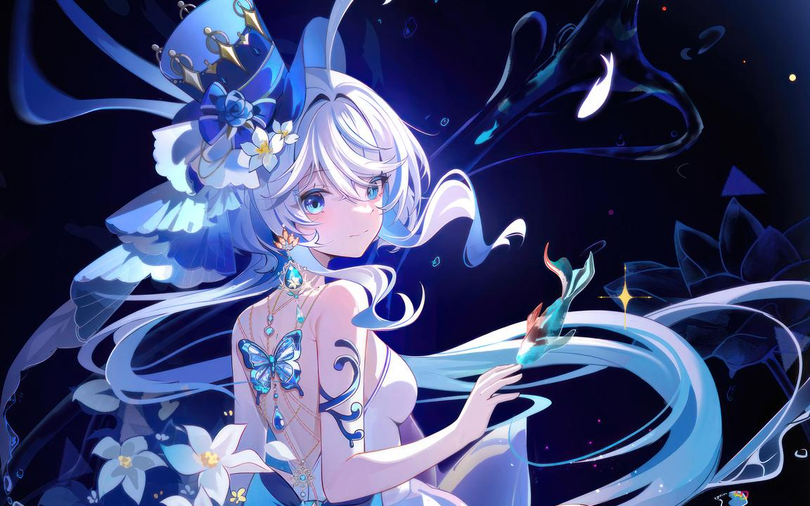

Furina, also known as the Hydro Archon, is the deity ruling over the nation of Fontaine and the embodiment of the Hydro element. She is a wise and calm god who governs the principle of justice, law, and water.
Furina is a highly revered figure in Genshin Impact's lore, often seen as a symbol of clarity, purity, and balance. She is said to possess unmatched mastery over the Hydro element, and her powers are known to shape the flow of justice and influence the tides of law.
Not much is known about her role in the main storyline, but it is expected that she will play a significant part in upcoming updates and future arcs of the game.
Trivia: As the Hydro Archon, Furina is often associated with the idea of balance and fairness. Her followers are known to be dedicated to upholding justice and maintaining harmony within society.
 ⬅️ Back to Main Page